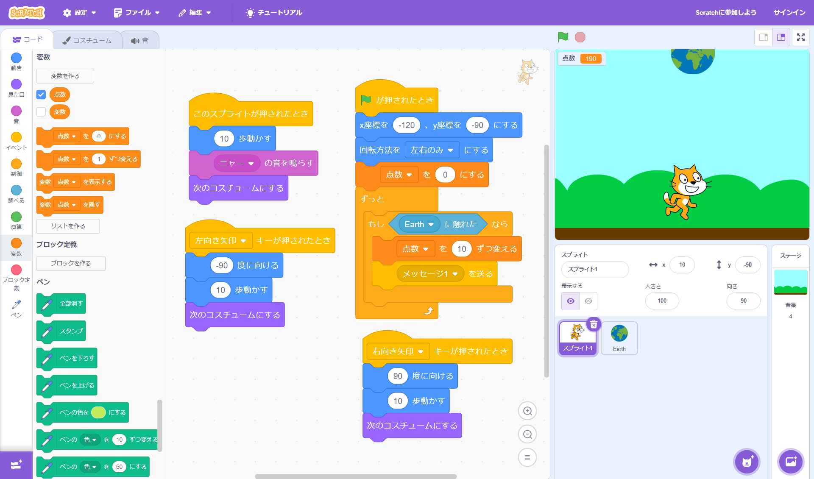

1週目のレポート ： 公大高専１年実習I-1
a班08番 ニックネーム
第1週目
1-1 サイエンスアート
1.内容
スクラッチを使って線を書くプログラムを作成した。
ペンが進むごとに色が変わるようにし、また角度も変えていくことで模様をえがくようにした。
2.感想
Scratch自体は、中学校で使ったことがあったが、変数などは使用したことがなかったので新しいことができて楽しかった。
また、思った通りに動かすのは難しく、計算力が必要だと感じた。
1-2 ゲーム

1.内容
Scratchを使って、ねこが、落ちてくる地球にあたるとポイントを獲得するプログラムを作成した。
2.感想
幼少期からゲームの仕組みが気になっていたので、今回の実習でその仕組みに触れられ、また自分でゲームを作ることができ、とても楽しかった。
ゲームの難易度を、自分で変えることができるため、自分の納得できる良いゲームが作れたと感じた。
1-3 ホームページ作成
私のホームページ
1.内容
Githubを使い、ホームページの作成を行った。
2.感想
ホームページを自分で作成する機会が今までなかったため、自分でホームページを作ることは恐ろしく難しいと思っていたが
手順をしっかり踏めば意外と簡単に作成することができ、よりネットを身近に感じることができた。
これから機会があれば、自分のホームページを更新していきたいと思った